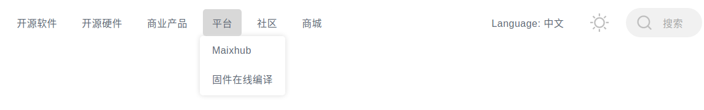
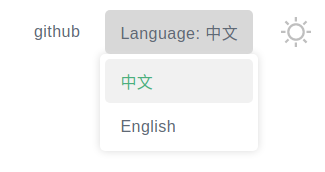
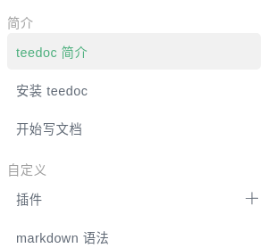

start writing document
Build and Preview
Execute in the document directory with site_config.json
teedoc serve
After displaying Starting server at 0.0.0.0:2333 ...., it is fine
Open the browser to visit: http://127.0.0.1:2333
Modify the file in real time. After saving the file, it will automatically rebuild the file after 3 seconds by default, and then the browser will automatically refresh
The delay time of automatic refresh can be set, you can add the
-tparameter, for example,teedoc -t 0 serveis set to a0second delay,
It can also be set in the document configuration, see the description of the configuration parameterrebuild_changes_delaybelow
If you only need to build and generate HTML pages, you only need to execute
teedoc build
Note that if you are finally generating the release version of the document, you must use the
buildcommand to generate the website page, the page generated by theservecommand can only be used for local preview, there will be redundant preview related code, which is not suitable Used in production deployment
In addition, you can also specify the parameter -d or --dir to specify the document directory, so that you do not need to execute commands under the document directory, such as
teedoc -d /home/teedoc/my_doc build
Build document delete
The built document will be placed in the out directory, the program will not actively delete it, if you need to clear it, please delete it manually
Document directory structure
├─.github
├─docs
│ ├─develop
│ │ ├─en
│ │ └─zh
│ └─get_started
│ ├─assets
│ ├─en
│ └─zh
├─pages
│ └─index
│ ├─en
│ └─zh
├─static
│
└─site_config.json
.github: automatic build script, how to use it in later chaptersdocs: document, contains multiple documents, each document is a separate folderpages: pages, including homepages, 404 pages, etc.static: static file folder, such as storing picturessite_config.json: website configuration fileconfig.json: In addition tosite_config.json, each document directory can haveconfig.jsonto configure document related pagessidebar.json: document directory
Before looking at how to use the configuration file, you must keep in mind that the configuration file is very simple. The configuration file has only two file names, a unique document configuration file site_config and each document's own configuration file config
Configuration file
The configuration file can be a file in json or yaml format, choose the one you like. Don't be afraid if you haven't touched it before, search for a tutorial and take 10 minutes to learn it.
If your document directory has a lot of content, it is recommended to use the yaml format, which looks more concise
teedoc provides commands for converting between json and yaml formats
From json to yaml
teedoc -f ./config.json json2yaml
From yaml to json
teedoc -f ./config.json yaml2json
From gitbook SUMMARY.md to json
teedoc -f ./SUMMARY.md summary2json
From gitbook SUMMARY.md to yaml
teedoc -f ./SUMMARY.md summary2yaml
site_config.json Site configuration
Website configuration items, such as website name, page routing, plug-in configuration, etc.
The following sample configuration file looks like there are many configuration items, don’t be scared, in fact it is very simple, the main configuration items, mastered, thinking is easy
The configuration file is in json format, for example:
{
"site_name": "teedoc",
"site_slogon": "happy to write",
"site_root_url": "/",
"site_domain": "teedoc.github.io",
"site_protocol": "https",
"config_template_dir": "./",
"source": "https://github.com/teedoc/teedoc.github.io/blob/main",
"route": {
"docs": {
"/get_started/zh/": "docs/get_started/zh",
"/develop/zh/": "docs/develop/zh",
},
"pages": {
"/": "pages/index/zh",
},
"assets": {
"/static/": "static",
"/get_started/assets/": "docs/get_started/assets"
},
"/blog/": "blog"
},
"translate": {
"docs": {
"/get_started/zh/": [ {
"url": "/get_started/en/",
"src": "docs/get_started/en"
}
],
"/develop/zh/": [ {
"url": "/develop/en/",
"src": "docs/develop/en"
}
]
},
"pages": {
"/": [ {
"url": "/en/",
"src": "pages/index/en"
}
]
}
},
"executable": {
"python": "python3",
"pip": "pip3"
},
"plugins": {
"teedoc-plugin-markdown-parser":{
"from": "pypi",
"config": {
}
},
"teedoc-plugin-theme-default":{
"from": "pypi",
"config": {
"dark": true,
"env":{
"main_color": "#4caf7d"
},
"css": "/static/css/custom.css",
"js": "/static/js/custom.js"
}
}
}
}
site_name: site namesite_slogon: website slogansite_root_url: website root directory path, use the default value/; if you need to put the generated content in the website folder (not the root directory folder), you can setsite_domain: website domain name, currently used place: generatesitemap.xmlandrobots.txtsite_protocol: website protocol,httporhttps, currently used place: generatesitemap.xmlandrobots.txtconfig_template_dir:configtemplate file,config.jsonorconfig.yamlin other document directories can beimportthe files in it, the default location is the directory wheresite_configis locatedsource: document source path, such ashttps://github.com/teedoc/teedoc.github.io/blob/main, wheremainis the main branch of the document, andEdit this page' will be added to the document pageButton (link), click to jump to the source code of the corresponding file. You can leave it blank to not add a link. In addition, you can add"show_source": "Edit this page"inconfig.jsonto define the text content of the button asEdit this page, if you want the document to have no such button, set it to"show_source": false; you can also addshow_source: edit this pageorshow_source: falsein the header information of the file (mdoripynbfile) to setroute: Web page routing, including routing of documents, pages and resource files, such as routing of documents
"docs": {
"/get_started/zh/": "docs/get_started/zh",
"/get_started/en/": "docs/get_started/en",
"/develop/zh/": "docs/develop/zh",
"/develop/en/": "docs/develop/en"
},
The key represents the url of the document in the final generated website, and the following value is the corresponding source document path.
For example, the source document docs/get_started/zh/README.md will generate the file out/get_started/zh/index.html after construction. If it is not a md file (ie unsupported file), it will be left intact Copy files automatically, and finally the out directory is the generated website
The same is true for pages, assets will not perform document conversion and directly copy to the corresponding directory
translate: Translate, specify theurland file path of the translated version corresponding to the document. Similarly, theconfigandsidebarconfiguration files are required under the path of the translated version, andlocaleis specified in theconfigfile To achieve the specified document language to be translated, for example, Chinese can bezh,zh_CN,zh_TW, English isen,en_US, etc. The translatedsidebarand the document path need to be consistent with the source document. If there is no translation, you can leave the translation file. When the user visits a page that has not been translated, it will jump tono_tanslate.htmlto indicate that there is no translation. For more details, please see Internationalization i18nexecutable: executable program settings, here you can set the executable program names ofpythonandpip, which will be used when installing the plug-inplugins: Plug-in configuration, mainly composed of name, source, and configuration items.
For the name, you can search for teedoc-plugin in github to find open source plug-ins. You are also welcome to participate in writing plug-ins (you only need to use the Python syntax);
Fill in the from field with pypi, if the plug-in is downloaded locally, you can also fill in the folder path, or you can fill in the git path directly, such as git+https://github.com/*****/* *****.git
The configuration items are determined by the specific plug-in. For example, teedoc-plugin-theme-default has the dark option to choose whether to enable the dark theme
rebuild_changes_delay: After detecting file changes, how many seconds to delay automatically regenerating the document, the browser will automatically refresh the page, the default is3seconds, the shortest can be set to0seconds, you can useteedoc -t 3 serveorteedoc --delay serveto override this settingrobots: Customize the content ofrobots.txt, such as"User-agent": "*"means that all clients are allowed to crawl, which will have an impact onSEO. For example, crawling ofJPEGpictures is not allowed:"Disallow": "/.jpeg$", and access to theadmindirectory:"Disallow": "/admin"is not allowed, specifically androbots.txtSame format requirementslayout_root_dir: the root directory of the layout template, the default islayout, that is, when the layout template file is needed, it will automatically find it under this folderlayout_i18n_dirs: The international translation directory oflayout, which can be a path such aslocales, and in some special cases, multiple paths such as["locales1", "locales2]can also be set. The content of the file can be referred to [i18n](./i18n.md#plug-in internationalization) production
config.json document configuration
This is the configuration for each document, placed in the root directory of each document, such as docs/get_started/zh/config.json, each document is independent of each other, you can set the same to keep the website navigation bar consistent
Here you can configure the navigation bar of each document and the content of the footer (footer), and you can also set the config item of the plug-in. The current document will override the configuration in site_config.json to achieve different Documents in different languages (internationalization/i18n) or styles, etc.
such as:
{
"import": "config_zh",
"id": "teedoc_page",
"class": "language_zh",
"locale": "en_US",
"navbar": {
"title": "teedoc",
"logo": {
"alt": "teedoc logo",
"src": "/static/image/logo.png"
},
"home_url": "/",
"items": [
{
"url": "/get_started/zh/",
"label": "Installation and Use",
"position": "left"
},
{
"url": "/develop/zh/",
"label": "Development",
"position": "left"
},
{
"url": "https://github.com/neutree/teedoc",
"label": "github",
"target": "_blank",
"position": "right"
},
{
"label": "Language: ",
"position": "right",
"items": [
{
"url": "/get_started/zh/",
"label": "Chinese"
},
{
"url": "/get_started/en/",
"label": "English"
}
]
}
]
},
"footer":{
"top":[
{
"label": "Link",
"items": [
{
"label": "Use teedoc to build",
"url": "https://github.com/neutree/teedoc",
"target": "_blank"
},
{
"label": "Copyright © 2021 Neucrack",
"url": "https://neucrack.com",
"target": "_blank"
}
]
},
{
"label": "Source",
"items": [
{
"label": "github",
"url": "https://github.com/neutree/teedoc",
"target": "_blank"
},
{
"label": "Source files of this website",
"url": "https://github.com/teedoc/teedoc.github.io",
"target": "_blank"
}
]
}
],
"bottom": [
{
"label": "*ICP备********号-1",
"url": "https://beian.miit.gov.cn",
"target": "_blank"
},
{
"label": "*Public Network Security No. ************",
"url": "https://beian.miit.gov.cn/#/Integrated/index",
"target": "_blank"
}
]
},
"plugins": {
"teedoc-plugin-search":{
"config": {
"search_hint": "Search",
"input_hint": "Enter keywords, separate multiple keywords with spaces",
"loading_hint": "Loading, please wait...",
"download_err_hint": "Failed to download the file, please refresh and try again or check the network",
"other_docs_result_hint": "Results from other documents",
"curr_doc_result_hint": "Current document search result"
}
}
},
"show_source": "Edit this page"
}
import: You can import the configuration from the template file, the file name without suffix. For example,site_configsetconfig_template_dirto./, fill in"import": "config_zh"here, it means to importconfig_zh.json(priority) orconfig_zh in the same directory assite_config.yaml.
Then you can add the configuration of the current document, overwrite the template file, the same keywords, and modify different content. If it is an array (list), to replace the content of the template file, you need to add id to the array item of the template file. Keyword, then modify, if the id keyword is not specified, it will be appended to the array. For example, the template file config_zh:
{
"locale": "en_US",
"navbar": {
"title": "teedoc",
"items": [
{
"url": "/get_started/zh/",
"label": "安装使用",
"position": "left"
},
{
"id": "language",
"label": "Language: ",
"position": "right",
"items": [
{
"url": "/zh",
"label": "中文"
},
{
"url": "/en",
"label": "English"
}
]
}
]
}
}
The configuration file of a specific document:
{
"import": "config_zh",
"navbar": {
"title": "teedoc123",
"items": [
{
"id": "language",
"label": "Language: ",
"position": "right",
"items": [
{
"url": "/get_started/zh",
"label": "中文"
},
{
"url": "/get_started/en",
"label": "English"
}
]
}
]
}
}
id: Theidof the document. Generally, there is no need to write it. Theidwill be set to the<html>tags of all pages in theconfig.jsondirectory. For example, ifteedoc_pageis set here, all pages in this directory will become<html id="teedoc_page"> ... </html>. If themarkdownfile has setid, this value will be overwritten, that is, each page can only have oneid.class: Theclassof the document, generally you don't need to write it. Set theclassto the<html>tags of all pages in theconfig.jsondirectory, and use spaces for multipleclassSeparate. For example, iflanguage_zhis set here, all pages in this directory will become<html class="language_zh"> ... </html>. Ifclassis set in themarkdownfile, it will be appended. For example, iflanguage_zhis set inconfig.json, andclass: zh_readmeis set inREADME.md, the final result isclass=" language_zh zh_readme". This function is convenient to customize the style of each page or the style of different documents.locale: locale code, can found from here, for example:zh,zh_CN,en_US,jaetc. Or get by programbabel:
pip install babel
pybabel --list-locales
navbar: Navigation bar settings, each document can be individually set up the navigation bar, if you want to keep the entire website unified, you can modify each configuration to be the same. The keywordtypeis used in the first layer and is used to indicate the category of this label in the navigation bar. The values are:link: normal link, this option is the default when you don’t write thetypekeywordlist: There are sub-items, which will be displayed in the form of a drop-down menu

selection: Single option, such as language selection. When thetypekeyword is not written and there is theitemskeyword, this option is the default

language: Iftranslateis set insite_config, theitemsof typelanguagewill be automatically filled in the language list, so we don't need to write the language list manually! The effect is the same asselection(in fact, the internal code is to automatically replace thelanguagetype withselection)
footer: website footer, divided into upper and lower parts, and multiple columns can be added to the upper part, and each column can have multiple valuesplugins: Configure the configuration items of the plug-in, if it has been set in thesite_config.json, it will be overwritten, that is, the priority of the childconfigis highershow_source: Under the premise that the keywordsourceis set insite_config.json, it is the source code path of the document, such ashttps://github.com/teedoc/teedoc.github.io/blob/main, Wheremainis the main branch of the document, and theEdit this pagebutton (link) will be added to the document page, click to jump to the corresponding file source code. Set"show_source": "Edit this page"to define the text content of the button asEdit this page, if you don't set it, the default isEdit this page, if you want the document to have this button, set it to"show_source": false; you can also addshow_source: edit this pageorshow_source: falsein the header information of the file (mdoripynbfile) to set
sidebar.json Document directory (sidebar) settings
There is a directory for setting documents, one for each document, independent of each other
The file path uses a relative path, just fill in the file name, README.md will be automatically converted to index.html
In addition, you can also directly url without writing the path of file, such as "url": "/get_started/zh/", at the same time you can set "target":"_blank" to open in a new window, otherwise Open in current window
For the items in the first layer of items, if there is only label without url, file and items, a classification mark will be added to the sidebar, and the effect is as follows:

And you can add option "collapsed": false to show sub directory by default
such as:
items:
- label: Introduction to teedoc
file: README.md
- label: Install teedoc
file: install/README.md
- label: Start writing document
file: usage/start.md
- label: Plugin
file: plugins/README.md
collapsed: false
items:
- label: Theme Plugin
file: plugins/themes.md
- label: Other plugins
file: plugins/others.md
- label: markdown syntax
file: syntax/syntax_markdown.md
- label: Website using teedoc
file: usage/sites.md
- label: More samples
items:
- label: Second-level subdirectory example
items:
- label: Sample three-level sub-directory
items:
- label: Article 1
file: more/example_docs/doc1.md
- label: Article 2
file: more/example_docs/doc2.md
- label: This is a link
url: https://github.com/teedoc/teedoc
target: _blank
or json format
{
"items":[
{
"label": "Introduction to teedoc",
"file": "README.md"
},
{
"label": "Install teedoc",
"file": "install/README.md"
},
{
"label": "Start writing document",
"file": "usage/start.md"
},
{
"label": "Plugin",
"file": "plugins/README.md",
"collapsed": false,
"items":[
{
"label": "Theme Plugin",
"file": "plugins/themes.md"
},
{
"label": "Other plugins",
"file": "plugins/others.md"
}
]
},
{
"label": "markdown syntax",
"file": "syntax/syntax_markdown.md"
},
{
"label": "Website using teedoc",
"file": "usage/sites.md"
},
{
"label": "More samples",
"items":[
{
"label": "Second-level subdirectory example",
"items":[
{
"label": "Sample three-level sub-directory",
"items":[
{
"label": "Article 1",
"file": "more/example_docs/doc1.md"
}
]
},
{
"label": "Article 2",
"file": "more/example_docs/doc2.md"
}
]
},
{
"label": "This is a link",
"url": "https://github.com/teedoc/teedoc",
"target": "_blank"
}
]
}
]
}